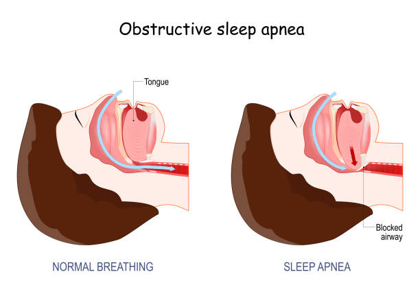

Obstructive Sleep Apnoea
What causes obstructive sleep apnoea?
During deep sleep, the muscles that keep the upper airway open relax. The airway narrows, and with each breath it is sucked further inwards. Breathing effort continues, but air cannot pass freely.
Symptoms
- Loud, irregular snoring with pauses in the pattern
- Daytime sleepiness and tiredness
- Poor memory, irritability and reduced interest in sex
Tests for sleep apnoea
- Sleep study: shows the type and severity of sleep apnoea
- Sleep endoscopy (DISE): identifies the areas causing obstruction
- Dynamic MRI: useful in selected patients
Can sleep apnoea be cured?
CPAP, BiPAP and oral devices control sleep apnoea very effectively while they are used, but they do not cure it. Weight reduction and surgery can cure it in selected patients.
Treatment options
- Lifestyle changes
- Medicines for nasal blockage and acid reflux
- Custom-made mandibular advancement devices
- Surgery to relieve the obstruction:
- Correcting fixed blockages, such as nasal blockage and enlarged adenoids and tonsils
- Palatal surgery, such as expansion pharyngoplasty or Z-palatoplasty
- Tongue base reduction using coblation
- Epiglottopexy, which moves the epiglottis forward to relieve obstruction
- Maxillomandibular advancement (MMA)
- Bariatric surgery for some patients with a BMI over 40
- In children, adenoidectomy and tonsil surgery
Read more about snoring in children and adults.
Book a consultation
Call 81390 05150 or message on WhatsApp. See clinics and timings.